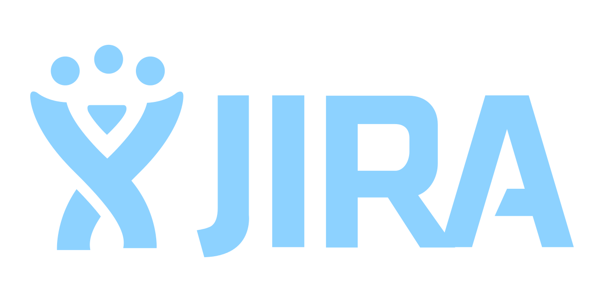
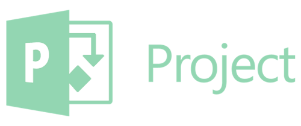
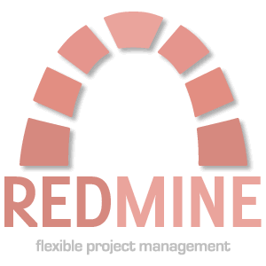

Pedro Palomo Pérez
Hello, I'm Pedro Palomo Pérez.
I have developed all my career in the Aerospace Industry, working in project related with Real-Time and Embedded Systems, always involved in software development, covering technical roles related with software engineering as well as project management.
I am a software engineer with fifteen years of experience and wide experience in international projects for embedded SW production for flight and ground applications, with strong knowledge in all the phases of the software life cycle.
Most of my career I have been involved in the development of Real Time Systems, Critical Software and Software Engineering applied for operational systems and real time test benches.
I have been Project Manager in several projects with capabilities and formal education to face duties of higher responsibilities within the development cycle (including scoping, scheduling, budgeting), team coordination and technical lead.
Currently very interested in learning web and mobile development especially the full stack based in JavaScript, React, React-native, MongoDB, Express, NodeJS, GraphQL, etc, and all the technologies that are changing way of development SPA.
Lately I am starting to be very interested in the Machine learning field, it is my following challenge.
Skills
Programming Lenguages
- C
- C++11/14
- Assembly
- Matlab
- Java
- Ada95
- Perl
- Shell Script
- Ruby
- Javascript
- HTML/CCS
- Python
Management Tools
- 
- 
- 
Configuration
 CVS
CVS- SVN
- GIT + GITHUB
SW Standards
- ESA PSS-05
- GSWS
- ARINC-653
- ECSS-E-ST-40C
IDE
- Eclipse
- Visual Studio
- Visual Studio Code
- Emacs
SW Design
- UML
- HRT-HOOD
Hardware
- ERC32
- LEON3
- LEON4
- Microblaze
- ARM X86
- CPCI-CPU/750
- MIL-STD-1553B
- SpaceWire
Web/Mobile
- Nodejs
- Express
- React
- React native
- MongoDB
- HTML5
- CSS3
- Bootstrap
- Webpack
- Firebase
- Heroku
OOSS
- Windows
- Linux
- LyxOS-178
- ORK
- RTEMS
- Object Ada
- XGC
- VxWorks
- FreeRTOS
Simulators
- Simulink
- Embedded Coder
- dSPACE
- SCADE Suite
- SCADE Lifecycle
- TSIM
- GRMON
Publications
Design of embedded systems with complex task dependencies and shared resource interference
Fotios Gioulekas, Peter Poplavko, Rany Kahil, Panagiotis Katsaros, Marius Bozga, Saddek Bensalem and Pedro Palomo
SEFM 2017 (15th International Conference on Software Engineering and Formal Methods)
Upgrade of ESA’s Debris Risk Assessment and Mitigation Analysis (DRAMA) Tool Spacecraft Entry Survival Analysis Module
Irene Pontijas Fuentes, Davide Bonetti, Federico Letterio, Gonzalo Vicario de Miguel, Gonzalo Blanco Arnao, Pedro Palomo Pérez, Cristina Parigini, Stijn Lemmens, Tobias Lips, Ronny Kanzler
7th European Conference for Aeronautics and Space Sciences, 2017
3CAT-2; an Experimental Nano-Satellite for GNSS-R Earth Observation; Mission Concept and Analysis
Hugo Carreno-Luengo, Adriano Camps, Pol Via, Juan Francisco Munoz, Alex Cortiella, David Vidal, Jaume Jané, Nuno Catarino, Miguel Hagenfeldt, Pedro Palomo and Stefania Cornara
IEEE Journal of Selected Topics in Applied Earth Observations and Remote Sensing
A HW-SW Co-Designed System for the Lunar Lander Hazard Detection and Avoidance Breadboarding
Pedro Palomo, Antonio Latorre, Carlos Valle, Sergio Gómez de Agüero, Miguel Hagenfeldt, Baltazar Parreira, Almudena Lindoso, Marta Portela, Mario García, Enrique San Millán, Yuri Zharikov, Luis Entrena
Data Systems and Aerospace (DASIA) 2014
An Integrated SVF for Real-Time Closed-Loop High-Complexity System Simulations
Juan Pérez, José A. Pulido, Pedro Palomo, Antonio Latorre, João S. Silva, Hugo D. Lopes and Alberto García
Data Systems and Aerospace (DASIA) 2014
SCOE for IXV and ExoMars GNC
Enrique Rodríguez García, Antonio Ayuso Barea, Ignacio Barrios Tascón , Ignacio de Miguel Matiacci, José María de las Casas Gilarranz, Pablo Giménez González, Vicente Fernández, Pedro Palomo, Rodrigo Haya Ramos, Cristina Parigini
Workshop on Simulation for European Space Programmes (SESP) 2012
An Integrated and Cost-Effective Simulation Tool for GNSS Space Receiver Algorithms Development
João S. Silva, Hugo D. Lopes, Tiago R. Peres, José M. Vasconcelos, Maria M. Coimbra, Pedro Freire, Pedro Palomo, Juan Pérez, José A. Pulido
ION GNSS 2013
A Lightweight Communication Protocol for Embedded Systems
Antonio Latorre, José A. Pulido, Carlos Valle, Juan Pérez, Sergio Gómez de Agüero, Pedro Palomo.
Data Systems and Aerospace (DASIA) 2012
AEROFAST Functional and Real-Time Simulation for Aerocapture GNC Assessment
Miguel Hagenfeldt, Andrea Mafficini, Vicente Fernández, Sergio Gómez, Carlos Valle, Pedro Palomo, Antonio Latorre
Simulation & EGSE Facilities for Space Programmes, SESP 2012
Mars Pre-aerocapture GNC Functional and Real Time Performance
Andrea Mafficini, Miguel Hagenfeldt, Carlos Valle, Pedro Palomo, Sergio Gómez, Luis Penin, José Manuel Rebordão, João Dinis
AIAA Guidance, Navigation, and Control Conference , August 15, 2012
Galileo “Message Generation Facility” – Safety-critical and Real-time
Antonio Latorre, Adrián Mora, Pedro Palomo, Tomás Suarez, Mike Rennie
Data Systems and Aerospace (DASIA) 2008